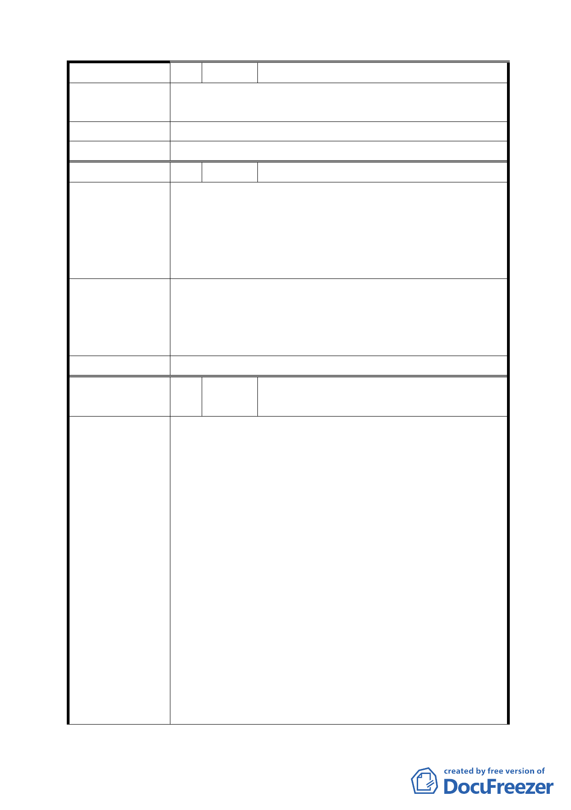

陳情理由
建議辦法
委員會決議
編號
陳情理由
建議辦法
委員會決議
編號
陳情理由
場)
同意變更為公園用地；無市場需求。大眾希望能有一座
美輪美奐的公園，供十大社區 2000 多戶人口休閒、放鬆。
同上。
同編號 5。
7 陳情人 李子仁(內湖區湖洲市場)
一、麗湖公園旁諸多社區因附近無市場日常生活用品之
購買非常不方便，加上社區老人人口非常多亟需方便
之購物中心。
二、附近已有麗湖公園及麗湖國小操場可資利用，再建
公園造成浪費、重複…。
一、市場用地千萬不可廢除。
二、在市場用地上設立超市、老人活動中心、簡易圖書
館、里民活動中心，這是眾多里民之期盼儘速實施此
項建設。
同編號 5。
8 陳情人 林奕華議員代轉高淑琴等 24 人(文山區樟
新市場)
一、木新市場很不適合當活動中心，環境和空氣問題不
好，希望能有一個安靜安全的活動中心。樟新里老人
人口增加，且室內空間不足，社區缺乏健康中心、室
內運動場所。另亦缺乏兒童青少年活動場所做為適當
休閒活動。
二、木新路三段最缺停車場建議可蓋立體式停車場。頂
樓空間可作空間花園、每層牆面種植垂吊式花卉。
三、本案案址對面已設有殘障及精障照顧中心各兩層，
各該地區不宜再增設相同照顧機構。現今少子化長壽
社會將來子女無能力照顧老者，是可預料的。另地球
暖化嚴重造成各種天災，目前臺北市僅南港一處有防
災宣導館，對本市南區市民前往非常不便。
四、可採聯合開發模式與旁邊公寓土地共建，可蓋消防
防災中心、老人休憩中心，地下室可開挖停車場供里
民使用，在寸土寸金之都市土地作多功能使用與發揮
最高效益。
- 12 -